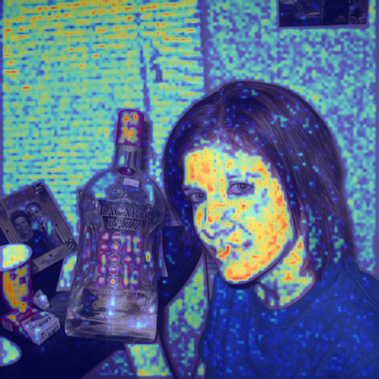
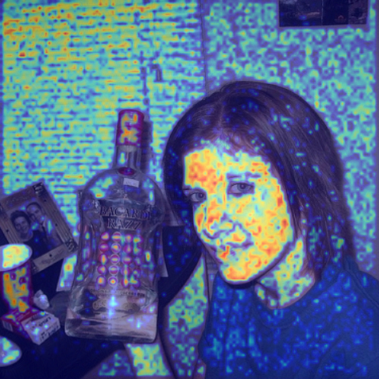
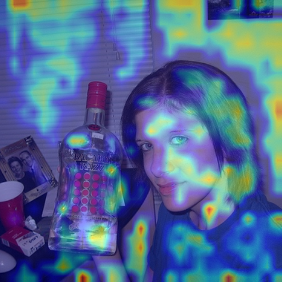
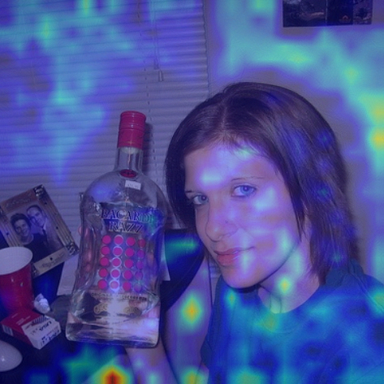
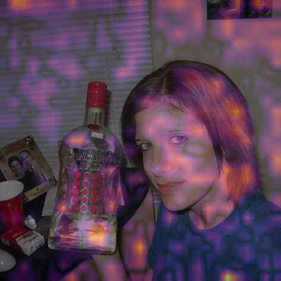
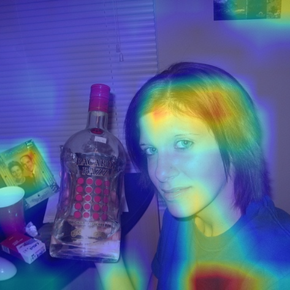

语义分割模型的 Grad-CAM
- 阅读类型：方法理解 / 实现说明
- 相关概念：Semantic Segmentation、Grad-CAM for Semantic Segmentation
- 最近补充：样例
2007_000346的逐层clean / adv / diff可视化预览
原始 CAM 的经典前提是：
- 模型最后有全局平均池化
- 分类分数可以直接看作某些通道加权和 语义分割的输出是一个密集预测图： $$
\text{logits} \in \mathbb{R}^{B \times C_{\mathrm{cls}} \times H \times W}
$$ 这里各个维度第一次出现时分别表示： - $B$：batch size，也就是一次前向里有多少张图 - $C_{\mathrm{cls}}$：语义分割类别数，也就是每个像素会输出多少个类别分数 - $H, W$：输出 logits map 的空间尺寸，也就是高和宽 也就是说，对每一张图、每一个像素位置，模型都会给出一组长度为 $C_{\mathrm{cls}}$ 的类别分数。 这时候更合理的做法不是问：
这张图属于 cat 类吗？
而是问：
模型在图中哪些位置把 cat 这个类判出来了，这些位置的 cat-logit 对当前层特征依赖在哪里？
这就是 Grad-CAM 更适合这个场景的原因。
标准 Grad-CAM 的数学骨架
假设选定某个中间层特征图：
$$ A \in \mathbb{R}^{K \times H_f \times W_f} $$
这里的符号含义是：
- $K$：该层特征图的通道数，也就是这一层有多少张 2D feature map
- $H_f, W_f$：该层特征图自己的空间尺寸
- $k$：通道索引
- $(u,v)$：该层特征图上的空间位置
- $c$：目标类别索引
- $s_c$：围绕目标类别 $c$ 构造出来的标量目标分数
第 $k$ 个通道在位置 $(u,v)$ 的响应值记为 $A_k(u,v)$，它表示：
在这张图的这个空间位置上，第 $k$ 个特征通道激活得有多强。
接下来，Grad-CAM 想回答的问题是：
如果我们关心类别 $c$ 的目标分数 $s_c$，那么这 $K$ 个通道里，哪些通道更重要？
它的做法是先看梯度：
$$ \frac{\partial s_c}{\partial A_k(u,v)} $$
这个量表示：
如果把第 $k$ 个通道在位置 $(u,v)$ 的激活值稍微改大一点，目标分数 $s_c$ 会怎么变。
如果这个梯度在很多位置上都比较大，说明这个通道整体上对类别 $c$ 更重要。
所以 Grad-CAM 不直接盯着单个像素位置的梯度，而是先把同一个通道上的梯度在空间上做平均，得到一个“通道级”的重要性权重：
$$ \alpha_k^c = \frac{1}{H_fW_f}\sum_{u,v}\frac{\partial s_c}{\partial A_k(u,v)} $$
这里：
- $\alpha_k^c$ 是第 $k$ 个通道对类别 $c$ 的重要性权重
- 分母 $H_fW_f$ 是该通道空间位置总数
- 这一步本质上是在做“梯度的全局平均池化”
直觉上，如果某个通道在整张 feature map 上都对目标分数有稳定的正贡献，那么它的 $\alpha_k^c$ 就会更大。
得到每个通道的权重之后，再回到原始特征图本身，把这些通道按权重加起来：
$$ \mathrm{CAM}^c(u,v) = \mathrm{ReLU}\left(\sum_k \alpha_k^c A_k(u,v)\right) $$
这一步的意思是：
- 如果某个通道很重要，就让它在最终热图里占更大权重
- 如果某个通道不重要，它的贡献就会被压小
- 对所有通道加权求和之后，就得到一个二维热图
最后的 ReLU 是为了保留正贡献，抑制负贡献。
也就是说，最终 CAM 更关注“哪些位置在支持这个类别”，而不是“哪些位置在反对这个类别”。
到这里得到的热图分辨率还是该层自己的 $H_f \times W_f$，通常比输入图更小。
所以最后还要把它插值回输入图大小，才能和原图叠加显示。
feature_map = chosen intermediate feature
score = target scalar score for class c
gradients = grad(score, feature_map)
weights = spatial_mean(gradients)
cam = relu(sum(weights * feature_map over channel))
cam = resize_to_input_resolution(cam)
cam = normalize_to_0_1(cam)
CAM 具体流程
输入整理
函数输入是一张单图：
$$ \mathrm{image} \in \mathbb{R}^{C_{\mathrm{in}} \times H \times W} \ $$
这里：
- $C_{\mathrm{in}}$ 是输入图像通道数，通常 RGB 图像是 3
- $H, W$ 是输入图像本身的高和宽
inputs = image.unsqueeze(0).to(model.device)
前向得到 logits 和 features
调用接口：
logits, features = model.forward_with_features(inputs)
这里拿到的是：
logits：形状为 $[1, C_{\mathrm{cls}}, H, W]$features[feature_key]：当前目标层的特征图，通常形状为 $[1, K, H_f, W_f]$
也就是说：
- 第 1 维是 batch，这里取 1 张图
- 第 2 维的 $C_{\mathrm{cls}}$ 是类别数
- 特征图里的 $K$ 是目标层通道数
- $H, W$ 是 logits map 的空间分辨率
- $H_f, W_f$ 是目标层自己的空间分辨率，通常和输入图大小不同
构造目标分数
代码先取出目标类别的 logit map：
class_logits = logits[:, int(class_id)]
再根据当前预测得到该类别的支持区域：
prediction = logits.argmax(dim=1)
target_mask = prediction == int(class_id)
如果该类像素存在，就在这个区域上求平均；否则 fallback 为整图平均。
logits, features = model.forward_with_features(inputs)
feature_map = features[feature_key]
这里：
feature_key是当前选中的目标层名字，比如backbone:stage0:block00features是一个字典，里面保存了这次 forward 过程中暴露出来的中间特征feature_map从这次 forward 返回的中间张量里按 key 取出
基于这一次 forward 得到的 logits 去构造目标分数：
class_logits = logits[:, int(class_id)]
prediction = logits.argmax(dim=1)
target_mask = prediction == int(class_id)
target_pixels = int(target_mask.sum().detach().cpu().item())
if target_pixels > 0:
target_score = class_logits.masked_select(target_mask).mean()
else:
target_score = class_logits.mean()
所以这里的关系其实很明确：
feature_map来自“指定层在这次 forward 里的输出”target_score来自“同一次 forward 最终产生的分割 logits”
对指定层特征求梯度
gradients = torch.autograd.grad(target_score, feature_map)[0]
这里没有调用 .backward()，而是直接用 torch.autograd.grad() 返回目标层的梯度张量。
这更适合做一次性的解释性分析，因为它更明确，也不会把不需要的梯度残留到参数上。
按 Grad-CAM 公式生成热图
weights = gradients.mean(dim=(2, 3), keepdim=True)
cam = torch.relu((weights * feature_map).sum(dim=1, keepdim=True))
cam = F.interpolate(cam, size=inputs.shape[-2:], mode="bilinear", align_corners=False)
cam_heatmap = normalize_heatmap(cam[0, 0].detach().cpu().numpy())
feature_map是目标层特征图，形状为 $[1, K, H_f, W_f]$gradients是目标分数对该特征图的梯度，形状也为 $[1, K, H_f, W_f]$ 其中：- $K$ 是目标层通道数
- $H_f, W_f$ 是目标层特征图的空间分辨率
1. 对梯度做空间平均，得到每个通道的权重
weights = gradients.mean(dim=(2, 3), keepdim=True)
这一步是在空间维度 $H_f, W_f$ 上对梯度求平均，把每个通道压缩成一个标量权重。输出形状变成：
weights：$[1, K, 1, 1]$
它表示：对于当前目标分数来说，每个通道整体上有多重要。
直观上，可以把这一步理解为：先统计一下“每个通道整体上帮了多大忙”。
2. 用通道权重对特征图加权求和
cam = torch.relu((weights * feature_map).sum(dim=1, keepdim=True))
这一步包含三层操作：
weights * feature_map：给每个通道乘上自己的权重，重要通道贡献更大.sum(dim=1, keepdim=True)：沿通道维求和，得到一张单通道响应图torch.relu(...)：只保留正贡献，把负值截断为 0
在经过通道求和之后，cam 的形状为：
cam：$[1, 1, H_f, W_f]$
也就是说，Grad-CAM 会把所有通道按重要性加权，再组合成一张二维热图。
这里使用 ReLU，是因为原始 Grad-CAM 只保留对目标分数有正向支持的区域，这样更符合“模型主要看了哪里来支持当前预测”的解释。
3. 把热图插值回输入图大小
cam = F.interpolate(cam, size=inputs.shape[-2:], mode="bilinear", align_corners=False)
前面得到的 cam 仍然处在目标层自己的分辨率上，也就是 $H_f \times W_f$。
但中间层特征图通常比输入图更小，所以这张热图还不能直接和原图对齐。
这一步就是把它上采样到输入图大小：
- 从 $[1, 1, H_f, W_f]$
- 变成 $[1, 1, H, W]$
这样后面才能把热图叠加到原图上进行可视化。这里使用双线性插值，是因为它对连续热图来说更平滑。
4. 转成 NumPy，并归一化到 [0, 1]
cam_heatmap = normalize_heatmap(cam[0, 0].detach().cpu().numpy())
这一步主要是为了后处理和可视化：
cam[0, 0]：去掉 batch 维和 channel 维，得到二维热图.detach()：从计算图中分离，不再继续跟踪梯度.cpu()：如果张量在 GPU 上，先移回 CPU.numpy()：转换成 NumPy 数组，方便后续画图normalize_heatmap(...)：把热图数值缩放到[0, 1]
归一化之后，cam_heatmap 就是一张可以直接映射颜色、再叠加到原图上的 CAM 热图。
逐层可视化示例
下面是样例在不同中间层上的 Grad-CAM 预览。按网络深度从浅到深排列，每组分别给出 clean、adv 和 diff，方便直接对照不同层上的响应变化。
backbone:stage0:block00
| clean | adv | diff |
|---|---|---|
 |
 |
backbone:stage2:block02
| clean | adv | diff |
|---|---|---|
 |
 |
 |
backbone:stage3:block02
| clean | adv | diff |
|---|---|---|
 |